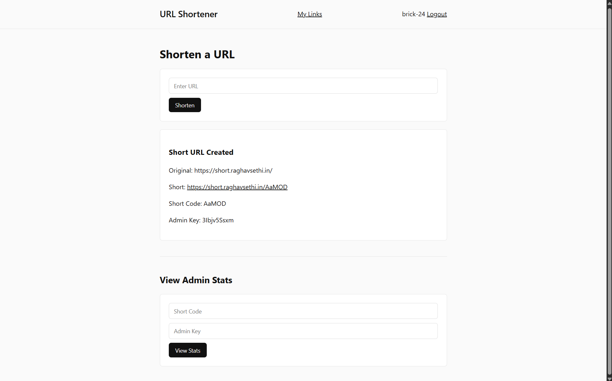

<- back
# Building a URL Shortener with FastAPI
Posted on Mar 8, 2026
In this project I built a simple URL shortener using FastAPI, PostgreSQL, and GitHub OAuth. The service runs on Google Cloud Run and stores its data in Cloud SQL.
The system supports link creation, redirect tracking, and analytics for each shortened link.

## Please give the Repo a Star
https://github.com/brick-24/url-shortenThe repository contains the full source code, deployment configuration, and documentation for the URL shortener.
You can also explore the README for setup instructions and architecture details.
git clone https://github.com/brick-24/url-shorten.git## How URL Shortening Works
The core idea is straightforward. A long URL is stored in a database and assigned a short code.
When someone visits the short code, the server looks up the original URL and redirects the user.
https://example.com/some/very/long/url→ https://short.raghavsethi.in/abc12The short code acts as a unique identifier in the database.
## Short Code Generation
Short codes are generated randomly using letters and numbers. A typical code might look like:
abc12These are stored alongside the original URL and used later for redirection.
key = "".join(random.choices(string.ascii_letters + string.digits, k=5))This keeps the links short while still giving millions of possible combinations.
## Redirect Flow
When someone visits a short link, the server performs three steps:
1. Look up the short code in the database
2. Log the click metadata
3. Redirect to the original URL
Redirects are handled with HTTP status code 307, which
preserves the original request method.
return RedirectResponse(url=record.original_url, status_code=307)## Click Tracking
Every redirect is logged for analytics. This includes information about the visitor and their environment.
| Field | Description |
|---|---|
| IP Address | Visitor IP extracted from request headers |
| User Agent | Browser or client making the request |
| Referer | The page the visitor came from |
| Timestamp | Time of the redirect |
These logs make it possible to build simple analytics such as total clicks and unique visitors.
## Authentication with GitHub
Instead of building a login system from scratch, the service uses GitHub OAuth.
When users log in, their GitHub ID and username are stored in the session. This allows the application to associate links with specific users.
request.session["user"] = {
"id": profile["id"],
"login": profile["login"]
}This keeps the authentication layer simple while still providing identity and ownership for links.
## Deployment
The application is deployed on Google Cloud Run, which runs containerised services and scales automatically.
PostgreSQL is hosted using Google Cloud SQL. In production the app connects to the database using the Cloud SQL Unix socket.
/cloudsql/INSTANCE_CONNECTION_NAMEThis setup allows the service to remain stateless while the database handles persistent storage.